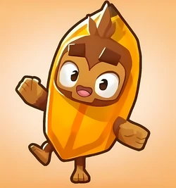

Meu primeiro post
Por: Ryan Ambrósio
Bem vindos aqui vou compartilhar um pouco da história e do mundo bloons td6.
Histótia do desenvolvimento do jogo
Origem (2007): Criado na Nova Zelândia pelos irmãos Stephen e Chris Harris (Ninja Kiwi) como um simples jogo em Flash de puzzle, onde um macaco atirava dardos em balões. A Virada (2008 - BTD 1): O conceito virou um Tower Defense, onde macacos são posicionados para conter invasões de balões (Bloons). Consolidação (2011 - BTD 5): Virou febre mundial ao chegar aos celulares, trazendo modos cooperativos, mais torres e rotas duplas de upgrades. Auge (2018 - BTD 6): Transição para o 3D, inclusão de Heróis e mecânicas profundas de estratégia, tornando-se um dos jogos mais vendidos da Steam e das lojas móbiles. Segredo do Sucesso: Visual leve e divertido combinado com uma estratégia tática surpreendentemente complexa e suporte contínuo dos desenvolvedores. bloons td6.
Algumas curiosidades
Por que Balões? O conceito surgiu por acaso. Stephen Harris perguntou para a esposa qual tema seria divertido para um jogo de mira. Ela sugeriu "um macaco estourando balões", e a ideia colou instantaneamente. O Macaco Deus Supremo: O True Sun God (Deus Sol Verdadeiro) não é apenas a torre mais forte do jogo, mas exige o "sacrifício" de dezenas de outras torres ao seu redor para atingir a forma máxima, transformando-se em um templo negro. Crossover com Hora de Aventura: O sucesso da série chamou a atenção da Cartoon Network, resultando no jogo Bloons Adventure Time TD, onde Finn, Jake e Marceline lutavam lado a lado com os macacos. Comunidade que Cria: Em Bloons TD 6, o mapa "Geared" (um dos mais difíceis do jogo) foi inteiramente desenhado por um fã em um concurso da comunidade e acabou adicionado oficialmente ao jogo. Estourar balões dá trabalho: Na rodada 100 do BTD 6, o balão chefe classe "BAD" (Big Airship of Doom) precisa de mais de 20.000 pontos de dano para ser destruído, sem contar os balões menores que saem de dentro dele quando ele estoura. Comprados por um gigante: Em 2021, o estúdio original Ninja Kiwi foi comprado pela gigante dos jogos Modern Times Group (MTG) por cerca de 186 milhões de dólares, provando o valor gigante da franquia dos macaquinhos.